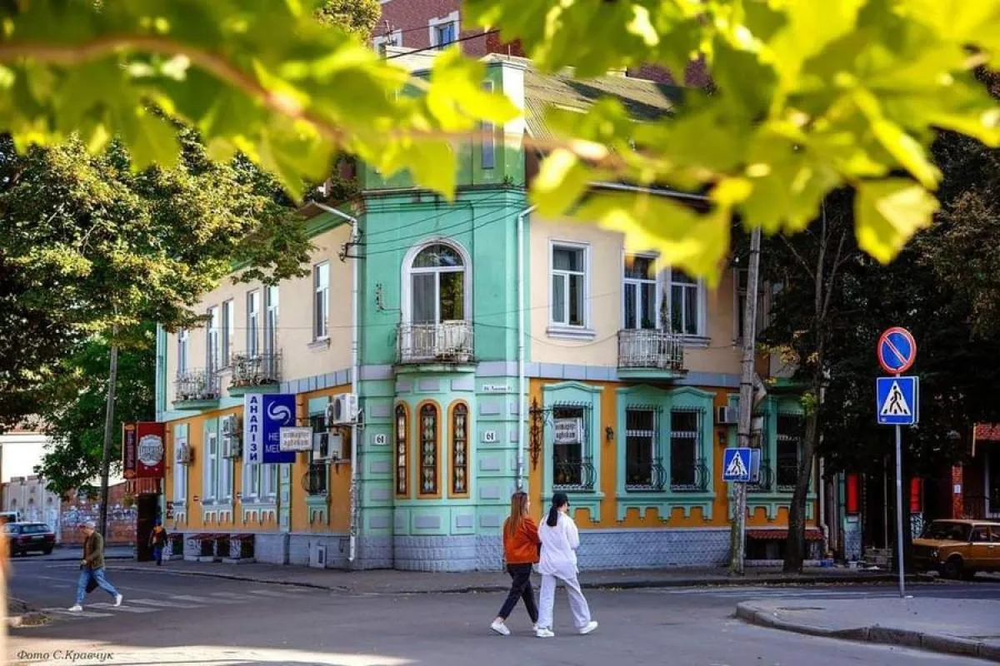

Історія Рівного

Основні відомості
Рівне — місто обласного значення в Україні, обласний центр Рівненської області, центр Рівненського району Рівненської області. Місто розташоване на річці Устя. У місті є три виші, два театри. Історико-краєзнавчий музей. Успенська дерев'яна церква (XVIII століття). Рівне відоме з 1283 року. Магдебурзьке право з 1492 року. Статус міста з 1939 року. У 1939—1991 роках місто називалося Ро́вно[1].
Походження назви
Долітописні часи
Палеоліт
Неоліт
Енеоліт
Русь
Українська революція
У роки боротьби українського народу за свою незалежність (1917–1920 роки) рівняни пережили чимало горя. Місто переходило з рук у руки.
Його жителі зазнали немало лиха від польських, російських, німецьких окупаційних режимів. Будівлі міста нерідко охоплювали пожежі. Як по всій Україні у 1917 році, так і в Рівному встановилося двовладдя Української Центральної Ради та російського Тимчасового уряду.
Польська республіка
13 серпня 1919 року місто було захоплено польськими військами. 9 вересня воно включається до складу новоутвореного Волинського округу.
У Рівному було створено повітові та міські органи управління. 4 лютого 1921 року (ще до підписання Ризького мирного договору) територію Рівненщини було поділено та включено до складу новоутворених Волинського та Поліського воєводств Польщі. Рівненський повіт (з центром у м. Рівне) віднесено до складу Волинського воєводства (адміністративний центр — м. Луцьк). Головним органом міського самоврядування міста Рівного в 1920-1930-ті роки був магістрат[l].
- 21 квітня 1921 — розпорядження Волинського воєводи про впровадження державної мови — польської у всіх державних і громадських установах на території воєводства.
- 1922 — відродження діяльності Рівненської «Просвіти» (до заборони в 1928 році).
- 1923 — початок діяльності КПЗУ на території краю (до розпуску Комінтерном у 1938 році).
- 1924—1933 — діяльність української кооперації.
- Травень 1925 — у Рівному відбувся судовий процес над 101 українцем за політичними мотивами.
- 1925 — закрито рівненську сірникову фабрику під тиском американсько-шведського сірникового концерну.
- 1926 — початок діяльності осередків УСРП
- 1927 — створення у Рівному «Союзу українок